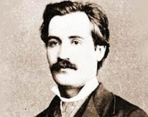
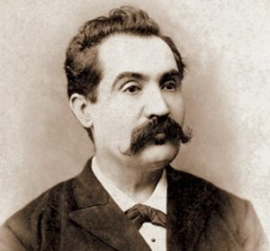
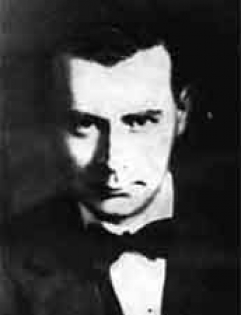
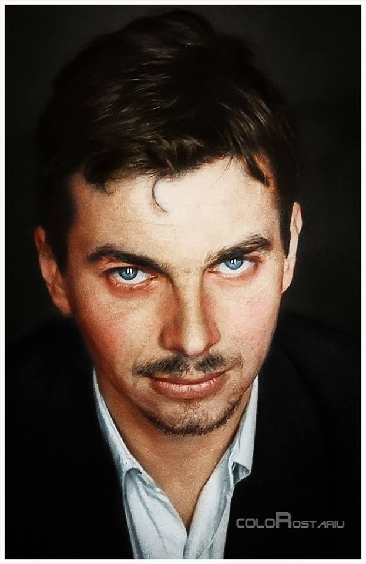

POEZIA
În primul rând trebuie să stabilim de la bun început, pentru a nu ne minți pe noi înșine, că România nu are o cultură bogată. Cultura României nu se compară cu cea a Angliei, Franței, Germaniei, Spaniei, Americii, Rusiei, Japoniei, etc.
Însă, frumusețea culturii României rezidă chiar în simplitatea ei. România are ca piloni fundamentali ai culturii 3 mari poeți care sunt capabili să civilizeze întreaga planeta prin simplitatea și înțelepciunea învățăturilor din opera lor. Acești 3 mari poeți sunt : Nichita Stănescu, Lucian Blaga și Mihai Eminescu. Voi trata ulterior și alte personalități ale culturii române, voi vorbi despre Nae Ionescu, Mircea Eliade, Petre Tuțea, Liviu Rebreanu, Mihail Sadoveanu, Eugen Lovinescu, George Călinescu, Nicolae Steinhardt etc.
Mihai Eminescu
Eminescu s-a aflat înaintea timpurilor în care a trăit cu veacuri, milenii înainte. Voi da exemplu de niste citate din poezile lui Eminescu pentru a înțelege cu adevărat măreția lui.
“Nu credeam să învăț a muri vreodată” (Odă (în metru antic) )
Aceste versuri constituie un strigat a lui Eminescu în fața nedreptății colosale la care a fost supus de oamenii contemporani cu el. Aceste versuri au fost scrise în perioada în care a fost torturat (a fost torturat 6 ani de zile cu injecții cu mercur și apoi a fost omorât) și băgat la închisoare de asa-zișii lui prieteni Titu Maiorescu și Petre Carp. În epocă, era cunoscută atitudinea lui Eminescu prin articolele sale care puneau întrebări fundamentale despre aspectele societății de atunci din ziarul Timpul și din activitatea din cenaclul Junimea. În momentul când s-a semnat tratatul secret de alianță cu Austro-Ungaria de către regele Carol (căci Carol era de origini germane) în anul 1883, Eminescu a aflat despre acest document și a protestat vehement pentru că exista riscul ca România sa piardă definitiv Transilvania. Atunci oamenii din epocă au considerat că trebuie să îl bage la închisoare pentru că este prea periculos “Și mai potoliți-l pe Eminescu”. Lui Eminescu i-au fost inventate tot soiul de boli, că ar fi nebun, că ar fi dement, că ar fi sifilitic, etc. toate acestea au fost inventate doar pentru a îl băga la închisoare.


În prima poză din stânga este Eminescu înainte să fie torturat – arăta tânăr și normal ca un bărbat de 30 și ceva de ani. În a doua poză este Eminescu după ce a fost torturat. Eminescu, fiind un spirit tânăr prin esență a reușit să îmbătrânească fizic în doar 6 ani de parcă avea 60 de ani. În a doua poză nu avea mai mult de 39 de ani. A doua poză ilustrează foarte bine drama și tragedia prin care a trecut acest geniu. Eminescu a fost considerat dement și tratat cu injecții de mercur. România nici până în ziua de azi nu a făcut o reparație morală pentru aceasta mare nedreptate istorica deși se laudă sus și tare că își apreciază poetul național.
Eminescu a reușit în timpul vieții sale să publice un singur volum de Poezii (Poesii 21 dec 1883). Chiar și acest volum este atât de concentrat în învățăturile sale încât poate fi considerat mai valoros decât însăși Biblia.
“Vreme trece, vreme vine,
Toate-s vechi și nouă toate;
Ce e rău și ce e bine
Tu te-ntreabă și socoate;
Nu spera și nu ai teama,
Ce e val ca valul trece;
De te-ndeamnă, de te cheamă,
Tu rămâi la toate rece. ” (Glossă)
“Eu îmi apăr sărăcia și nevoile și neamul” – În sensul : eu îmi apăr conștiința, demnitatea și identitatea, te rog nu mă viola, lasa-mă te rog așa sărac cum sunt eu. (Scrisoarea 3-a)
“Iar deasupra tuturora va vorbi vrun mititel,
Nu slăvindu-te pe tine… lustruindu-se pe el
Sub a numelui tău umbră.” (Scrisoarea I)
Eminescu a anticipat foarte bine ce avea să se întâmple după moartea lui, și chiar așa s-a și întâmplat. Eminescu a început să fie foarte apreciat de oamenii din epoca interbelică și au apărut o întreagă armată de eminescologi.
“Religia – o frază de dânşii inventată
Ca cu a ei putere să vă aplece-n jug,
Căci de-ar lipsi din inimi speranţa de răsplată,
După ce-amar muncirăţi mizeri viaţa toată,
Aţi mai purta osânda ca vita de la plug?” (Împărat și Proletar)
“Din chaos, Doamne,-am apărut
Şi m-aş întoarce-n chaos…
Şi din repaos m-am născut,
Mi-e sete de repaos.” (Luceafărul)
Luceafărul este artă pură. În nenumărate poezii ale lui Eminescu întâlnim viziunea sa despre univers care a fost inspirată atât din studiile sale de la universitatea din Viena cât și din învațătura hindusă – Upanișade. Eminescu era mai mult adeptul teoriei că universul s-a format în urma unei explozii.
“Şi pe toţi ce-n astă lume sunt supuşi puterii sorţii
Deopotrivă-i stăpâneşte raza ta şi geniul morţii!” (Scrisoarea I)
Eminescu a înțeles că toți suntem egali și frați în acest unic cerc numit umanitate indiferent de nivelul nostru de conștiință.
Eminescu ar trebui să fie redat întregii planete. Eu consider și afirm că Eminescu ar trebui să fie poetul Planetei. Foarte rar se găsește un poet care să fi atins niște culmi ale conștiinței atât de înalte.
Lucian Blaga

Blaga nu a reușit să vorbească până la vârsta de 7 ani de zile. Iar când în final a început să vorbească, întrebat fiind de părinții săi de ce nu a vorbit până atunci, el a răspuns : “Mi-a fost rușine!”.
Trebuie menționat că Lucian Blaga a fost în primul rând un mare filozof și a fost nominalizat pentru premiul Nobel în perioada în care a trăit. Blaga a inventat numeroase concepte filozofice. În legătură cu poeziile sale, acestea sunt foarte expresive, plastice și simple.
“Lumina ce-o simt
năvălindu-mi în piept când te vad,
oare nu e un strop din lumina
creată în ziua dintâi,
din lumina aceea-nsetată adânc de viaţă?” (Lumina)
Simplu și expresiv. Câți dintre noi nu am experimentat acest sentiment de lumină în momentul când am fost îndrăgostiți? Există la momentul actual pe planetă oameni care practică meditația și încearcă să afle sunetul primordial al universului și lumina primordială a universului. În Yoga, scufundarea în aceste energii se numește Vidul Beatific.
“Eu nu strivesc corola de minuni a lumii
şi nu ucid
cu mintea tainele, ce le-ntâlnesc
în calea mea” (Eu nu strivesc corola de minuni a lumii)
Blaga a sesizat în această poezie tendința mecanică, obsesivă a oamenilor, de a analiza, a separa, și a divide în granularitate tot soiul de probleme până când le distrug în loc să le rezolve. Acest tip abordare este prezentă și în unele sectoare ale științei astăzi. Fizica cuantica a descoperit că există un anumit tip de particulă care atunci când observatorul încearcă să o analizeze aceasta se ascunde.
“Zic: Tată, mersul sorilor e bun.
El tace – pentru că-i e frică de cuvinte.
El tace – fiindcă orice vorba la el se schimbă-n faptă.” (De mână cu marele orb)
Aici Blaga descrie o relație cu divinitatea, în care Dumnezeu este un prieten, un călăuzitor, dar orb. De ce orb ? Poate pentru că este atât de multă lumină în ochii Lui încât a orbit.
“Eu
nu ma caiesc,
c-am adunat in suflet si noroi –
dar ma gandesc la tine.
…
Nu stii,
ca numa-n lacuri cu noroi cresc nuferi?” (Vei plânge mult ori vei zâmbi?)
Blaga descrie o relație de dragoste în care inevitabil exista și suferință. Dragostea implică multă suferință. Recurentă în poezie este tema că din urât se poate naște frumos. O întâlnim și la Arghezi, Baudelaire etc.
Nichita Stănescu

Nichita Stănescu a reușit să atingă culmea abstractului și matematicii prin poezie. În epoca în care a trăit a fost considerat un poet mai mare chiar și decât Eminescu. Cel mai important volum al său se numește “Necuvintele”. Nichita Stănescu a avut o expresivitate matematică, a fost elementar de simplu, plastic și de abstract. Acesta nu își scria niciodată poeziile singur pentru că considera că întinează momentul creației; poeziile sale au fost scrise după dictare de către soția lui.
Un adevăr simplu și elementar pe care Nichita Stănescu l-a afirmat în epoca sa este acela că “Omul este ceea ce își aduce aminte despre el”. Asta e situația pe care o trăim și acum în prezent în epoca noastră, trebuie să ne trezim, să ne trezim conștiința, să ne amintim cine suntem.
Nichita Stănescu a fost extraordinar de paradoxal și de irațional în poeziile sale, și a avut un umor foarte bun, de calitate. Când citești poeziile lui Nichita Stănescu există riscul să te trezești râzând în hohote. Exemple :
“A venit îngerul și mi-a spus:
– Nu vrei sa cumperi un câine?
Eu nu am fost în stare să-i răspund.
Cuvintele pe care i le-as fi putut striga erau
lătrătoare.
– Nu vrei să cumperi un câine?
m-a întrebat îngerul, ținând în brațe
inima mea
lătrătoare,
dând din stânga ca dintr-o coadă.
– Nu vrei să cumperi un câine?
m-a întrebat îngerul
în timp ce inima mea
dădea din sânge ca dintr-o coadă.” (A Cumpăra Un Câine)
“Noi știm că unu ori unu fac unu,
dar un inorog ori o pară
nu știm cât face.
Știm că cinci fără patru fac unu,
dar un nor fără o corabie
nu știm cât face.
Știm, noi știm că opt
împărțit la opt fac unu,
dar un munte împărțit la o capră
nu știm cât face.
Știm că unu plus unu fac doi,
dar eu și cu tine,
nu Știm, vai, nu știm cât facem.
…
Numai tu și cu mine
înmulțiți și împărțiți
adunați și scăzuți
rămânem aceiași…
Pieri din mintea mea!
Revino-mi în inimă!”(Altă matematică)
“Pot să fiu uitat, pentru că
nu țin la brațe, pot să-mi lipsească.
Pot fi părăsit, pentru că
nu-mi iubesc picioarele, pot merge
și cu aerul.
Pot fi lăsat singur, pentru că
sângele meu se vărsa în mare
oricum.
E loc. Toate coastele s-au ridicat
ca niște bariere.
E lumina destulă. Privirile mele
nu vad decât o singura masca.
Dar ea nu exista încă,
așa că e loc, e loc, este.” (Edict)
“Se ia o bucată de piatră,
se ciopleşte cu o daltă de sânge,
se lustruieşte cu ochiul lui Homer,
se răzuieşte cu raze
până cubul iese perfect.
După aceea se sărută de numărate ori cubul
cu gura ta, cu gura altora
şi mai ales cu gura infantei.
După aceea se ia un ciocan
şi brusc se fărâmă un colţ de-al cubului.
Toţi, dar absolut toţi zice-vor:
– Ce cub perfect ar fi fost acesta
de n-ar fi avut un colţ sfărâmat!” (Lecţia despre cub)
Acestea sunt doar 3 exemple de genii din cultura Românească. Aceste 3 personalități au trăit stări de conștiință superioară pentru a reuși să transpună în creația lor asemenea adevăruri simple și elementare, atât de multă expresivitate și atât de mult umor de bună calitate. Exista nenumărate exemple de genii din cultura Românească, voi aborda ulterior în articolele următoare și alte personalități.
Blaga spunea că veșnicia s-a născut la sat. Acesta poate fi un clișeu dacă este să ne uităm astăzi la satul românesc. Însă în perioada interbelică satul era cu adevărat valoros. Condiția țăranului și săteanului român ne-a constituit pe noi ca popor. Moromete s-a născut în Câmpia Bărăganului din acest popor. Și într-adevăr, în ce afirmă Blaga există un sâmbure de adevăr. Întrebat fiind un simplu țăran român ce este viața, acesta a răspuns simplu “Viața este viață!”. Și așa și este, viata se explică prin ea însăși, și poate fi înțeleasă doar experimentând-o. Acest țăran simplu reușește printr-o frază simplă să demonteze sisteme întregi de filozofii și teorii alcătuite de mari savanți și intelectuali. Este de responsabilitatea noastră să renaștem și să reînviem satul românesc.
Viata este viata pur și simplu. Când Moise l-a întrebat pe Dumnezeu cine este, pe Muntele Sinai, Dumnezeu a răspuns simplu și elementar. “Eu sunt cel ce Sunt”. El se justifică prin însăși existența sa. Nimic nu mai exista înafară de Dumnezeu. Dumnezeu ne trăiește pe noi. Atât de simplu. Elementar de simplu. Iar acest țăran român, prin experiența sa și greutățile vieții, a reușit să cuprindă acest adevăr elementar, Eu sunt cel ce Sunt, Viața este viață.
Cultura Română nu este bogată, trebuie să fim îndeajuns de sinceri cu noi să recunoaștem asta, însă este simplă și esențială și trebuie să valorificăm acest lucru și acest potențial.